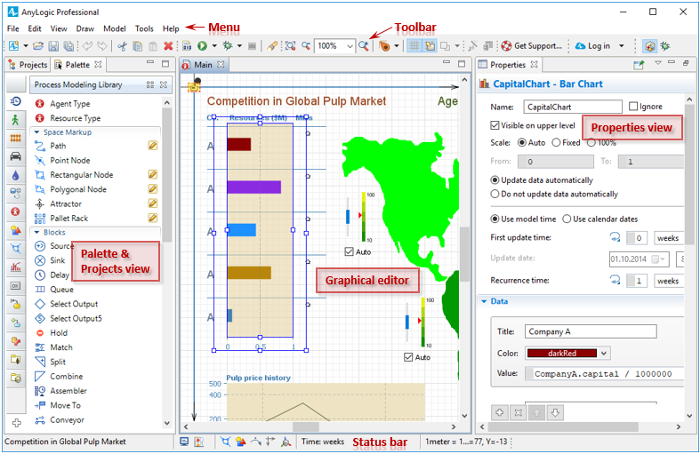

Cuando abras AnyLogic por primera vez, verás la pantalla de bienvenida! Cuando cierres esa ventana podrás visualizar todo el espacio de trabajo de AnyLogic.
En la parte superior de la ventana se encuentra el menú. Debajo de él se encuentra el toolbar con las herramientas más frecuentes. Al final del espacio encontrarás la barra de estado. Por defecto, estos son los componentes que se muestran en el espacio de trabajo: